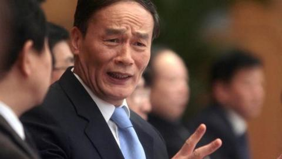
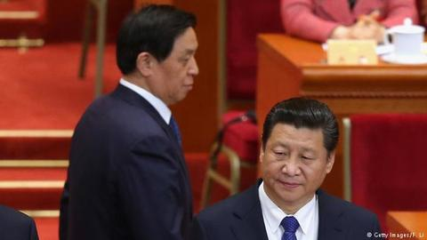
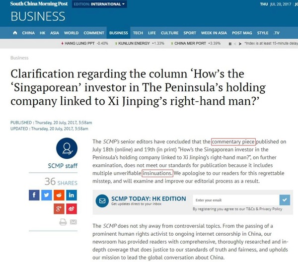
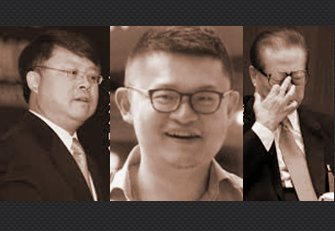
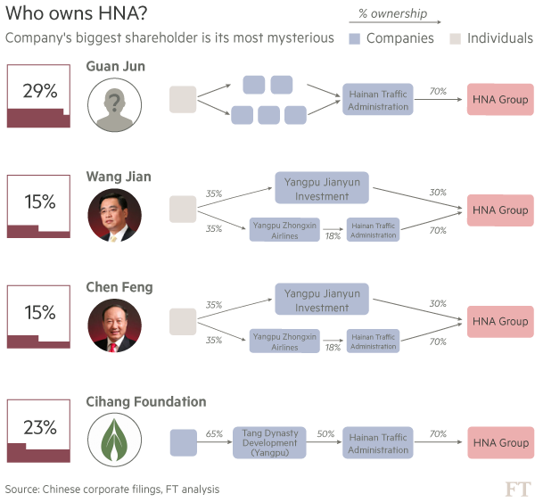
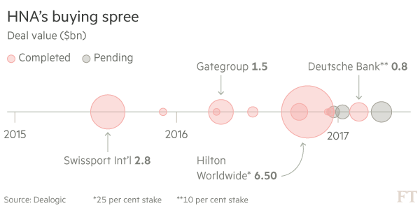
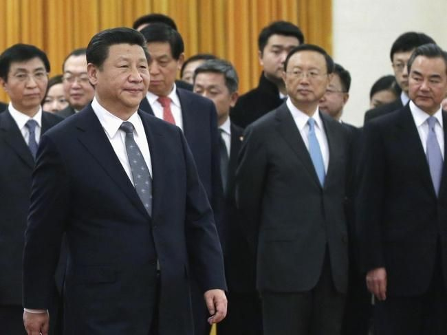
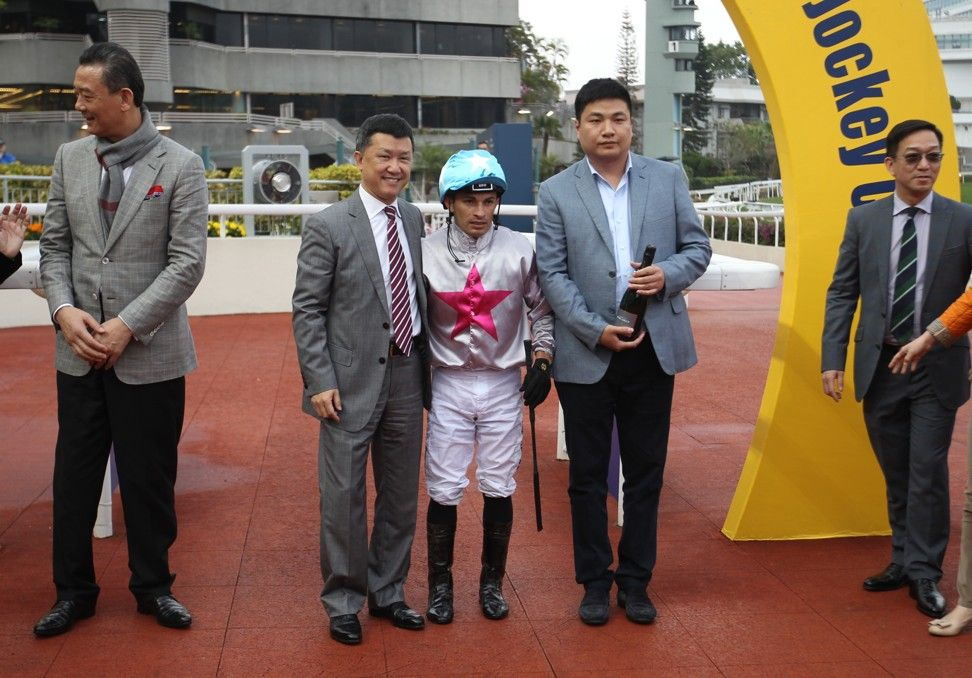
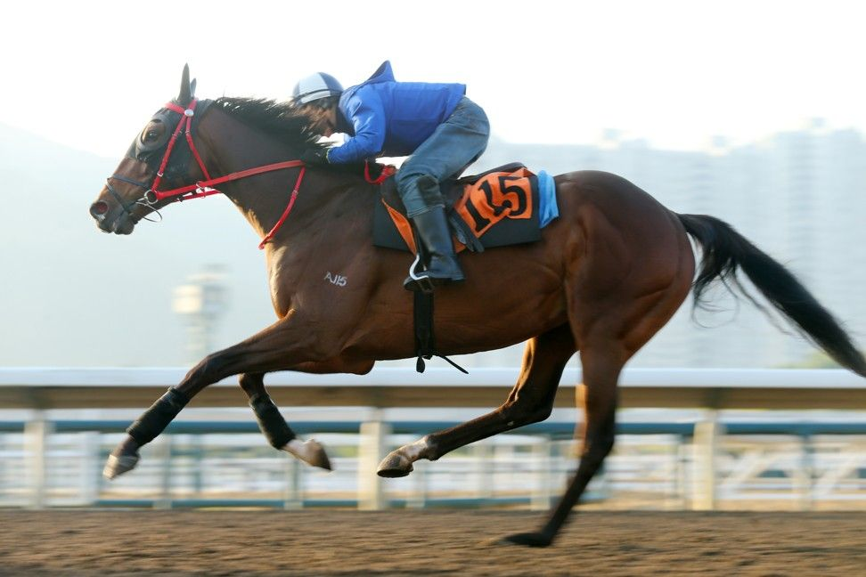
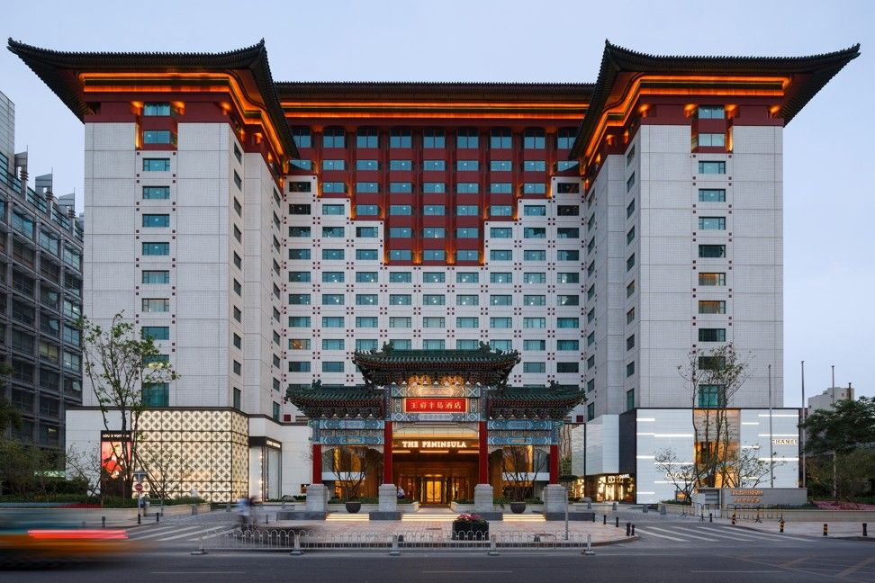

这次又隔了14天才发博文，让大伙儿久等了，抱歉 :(
顺便说一下：上周日（16日）俺曾经在博客评论区出现过。所以这次静默的时间并不长，大伙儿无需担心。
本来这周要写另一个话题的博文，但是7月15日看到孙政才被拿下，俺就预感到后面有好戏，先观望了一周。果不其然，栗战书紧接着也被爆出丑闻。今天这篇就来聊聊近期高层的权斗（纯属政治八卦，顺便抹黑朝廷）。
有句话俺要再次唠叨：随着十九大的临近，将来还会有更多好戏 :)

4月底发过一篇《每周转载：郭文贵撕逼王岐山——网友热议“海航、高空寻欢、习王斗”（多图）》，里面已经转载了很多郭文贵的爆料——涉及王岐山家族与海航的关系。
最近一两个月，郭文贵继续抖王公公的黑幕，内容也越来越劲爆。不过捏，郭近期的某些爆料缺乏【过硬的证据】，这也招致怀疑的声音。比如郭提到王岐山与范冰冰的淫乱视频，但是郭又拿不出具体的视频来公之于众（如果真能拿出视频，那才算是【核弹级】的官场地震）
郭文贵抖了海航的黑幕之后，一些外国知名媒体也跟进了（如下）。这从另一个方面暴露出海航盘根错节的关系。这至少说明：郭文贵对海航的爆料，不完全是空穴来风。
《一掷千金的海航是谁的？ @ FT/金融时报》
（以下是此文的节选）
《海航集团的神秘持股人 @ 纽约时报》
（以下是此文的节选）
《郭文贵紧盯王岐山 一掷千金的海航与他有何干系 @ RFI/法广》
（以下是此文的节选）
《练乙铮：党的清廉派 国之双面人 @ 苹果日报》
（以下是此文的节选，引文中的粗体是俺标注滴）
《美银行业巨头据报停止与海航生意交往 @ VOA/美国之音》
（以下是此文的节选）
王公公从5月中旬到6月下旬，在媒体上消失一个多月——这自然引发坊间议论纷纷。
公公重新现身媒体是在6月22日晚间的新闻联播，当时只有3分钟的镜头，算是比较低调的。但是，紧接着就在7月3日【高调亮相】——出席《扶贫领域监督执纪问责工作电视电话会议》。为啥是“高调”捏？因为这次电视电话会议，在全国各个省市县的纪委设了3000多个分会场，累计12万多名纪检监察干部参加，规模空前。
12万人的大会刚开完不久，王公公又在7月17日的《日人民报》发表【五千字长文】（朝廷官网链接在“这里”），以下这句是此文的重点句：
关于这个问题，
首先，习呆呆应该是力挺王公公留任常委。虽然习王二人也有矛盾（从某些细节可以看出），但是在十九大之前的这个关键时刻，他们两人只能选择联手，先渡过眼下这一关。
其次，刚才俺提到王岐山在《人民日报》的【署名长文】。熟悉党国官方话语的人应该意识到这是某种“暗示”（或者说是“造势”）。此文不断强调【十九大之后】要继续强化中纪委的巡视工作。
王公公神隐的一个多月（5月中旬到6月下旬），估计是高层在博弈，当时王的前途不明，于是暂停露面。如今高调现身，说明王公公【暂时】已经过关。为啥俺要强调“暂时”捏？因为王公公这几年树敌太多，很多人要让他落选下一任的常委——他的麻烦可能还没完。
比如说，郭文贵手中是否还有其它猛料？（注：常委级别的淫乱视频是最猛的料）无论是朝廷高层还是咱们屁民，其实都不清楚（恐怕只有郭自己知道）
另外，别忘了还有一个令完成（前任大内总管令计划的亲弟弟），如今也躲在美国避难。据未经证实的传闻，令完成手中也掌握了朝廷的高度机密。

目前的政治局委员中，只有胡春华与孙政才是60岁以下（两人同岁，皆为60后）。这两人都是十八大的时候“入局”，作为今后的“第一梯队接班人”来培养。从某种意义上，这两个家伙相当于“王储”。
胡春华是胡锦涛亲信，得到胡锦涛力挺而成为王储。在官场中甚至有“小胡锦涛”之称。
至于孙政才，很多人以为他是温家宝的门下。一个理由是：温影帝当总理的时候（2006），孙被任命为农业部长。
【但其实不然】。
根据孙的仕途经历及某些细节来推测，他应该是江派的人。孙政才长期（长达10年）在北京市的官场任职——从顺义县委副书记一路升到北京市委常委和市委秘书长。在这10年间，北京市官场的一把手分别是贾庆林和刘淇。而这两人都是江蛤蟆派系的骨干。
再来看孙政才更早年的经历——孙90年代早期在“北京农林科学院”当常务副院长的时候，江泽民的妹妹江泽慧是“中国林科院院长”。据未经证实的小道消息，孙政才得到江泽慧的推荐而进入北京官场。
大伙儿先来看一下朝廷官网的通告（原文如下，一字不差）：
想当年平西王被拿下之后，俺也曾写过一篇博文《八卦一下薄熙来去职的官方报道和小道消息》。今天再来解读一下孙政才的免职通告。
首先，如果是正常的调任，朝廷告示的格式如下：
这次的官方通告，【没有】提到最后那4个字（另有任用）。一般来说，有两种情况就【不提】“另有任用”4个字——
情况1：
如果这个官员之前的职务是“党务系统”，之后要调任“政务系统”，需要等到来年开两会，通过人大投票（投票只是走过场）确定其职务。这种情况下，官方通告就不会提及“另有任用”。
情况2：
如果此官员的仕途已经终结，当然也不会说“另有任用”。
那么，孙政才这次的职务调整，属于哪一种情况捏？可以通过一些细节看出来。
细节1：
按照惯例，地方诸侯（省级一把手）正常【调任】，“离任官员”与“接任官员”通常会一同出席职务交接的会议。
而这次的职务交接，只有陈敏尔出现，孙政才【没有】出现。这已经不同寻常了。
细节2：
正常情况下，新来的“接任官员”应该在交接仪式上对“前任官员”表示一下感谢，说一些官场的套话（这个属于官场礼仪）。但是陈敏尔在交接仪式上的讲话，压根儿【没有】提及孙政才，反而是大谈特谈
细节3：
孙政才被免职之前，本来是去北京参加全国金融工作会议（7月14日召开）。但是上周《新闻联播》关于此会议的画面中，已经【看不到】孙政才的面孔了。
从上述细节可以基本判断：孙政才属于“罢免/落马”，甚至有可能已经被双规了（限制人身自由）。
另外，看看重庆市政府最近一周的活动，也很有意思：
先来说说朝廷立储的惯例（拿“习/李”举例）：
“十七大”之前，官媒已经对“习近平、李克强”作了很多造势的宣传。等到“十七大”召开，习李二人就可以顺利【入常】（当上政治局常委）。并且在那届常委会中，习李二人的年龄远远小于其他常委——这就相当于习李二人已经被确定为接班人；然后到了“十八大”，两人就正式接班（一个主导党务系统，一个主导政务系统）。
按照这个惯例，今年开“十九大”之前，就应该针对预订的“王储”进行舆论造势，然后在“十九大”召开后选这两人进常委，作为“二十大”的接班人。但如今即将召开“十九大”（还剩不到半年），不但没有造势，反而其中一个王储已经【被废了】。
以上种种，就引发许多猜测。最大的一个猜测是：【习包子根本就不想遵循惯例】。也就是说，“十九大”很可能【不】指定接班人——这意味着包子将会在“二十大”继续当一把手，继续【第三个】任期。如果是这样，不但意味着“习包子”朝着“习特勒”又迈进了一步，也意味着伟光正的集体领导体制完了。

与大多数人不同，栗战书的官场履历中，最关键的反而是早期（80年代初）的经历。
1983年，习近平升任【河北省正定县县委书记】，当时栗战书是【河北省无极县的县委书记】。这两个县接壤，同属“石家庄”。那个时候，习栗二人经常互相走动，建立了很深的私交。
所以，习呆呆刚刚当上伟光正的掌门人，就迫不及待地把栗战书从贵州调入裆中央，担任【中办主任】（相当于“大内总管”）。
7月19日，《南华早报》（英文版）发表了一篇重磅报道：《How’s the Singaporean investor in The Peninsula’s holding company linked to Xi Jinping’s right-hand man?》。标题翻译成中文是：《半岛控股公司的“新加坡”投资人是如何关联到习近平心腹的？》
紧接着在【一天之后】，《南华早报》自己删除了这篇报道的内容，并替换成一份道歉声明（如下图）。

（《南华早报》发表的“道歉声明”截图）
虽然原文已经删除，但互联网是有记忆力滴（在网上刊登过的内容，是很难彻底删除滴）。所以俺顺手找出《南华早报》的原文。
（以下是【全文】，含配图）
考虑到某些读者对洋文不熟悉，下面俺引用美国之音对这篇报道的【中文转述】：
（栗战书 与 栗潜心）
栗潜心才20多岁，就已经是【中信资本副总裁】。另外还担任香港华菁会副主席。
这个“香港华菁会”于2011年成立，由香港前任特首梁振英赞助，里面网罗了富豪、名人、官二代。除了栗潜心，还有陈晴（港澳办副主任陈佐洱之女、李嘉诚的侄媳妇），孟明毅（中国房地产开发集团总裁孟晓苏之子）......
先来说说目前的这届常委会：
本届常委会的7人中，除了习呆呆自己，只有王公公能算得上是亲信。李克强是胡锦涛的人，其他4个常委（二张、俞、刘）都是江蛤蟆的人。显然，目前这届常委会让呆呆很不爽。
所以，“十九大”要选下一届常委，呆呆肯定是要力挺栗战书（铁杆亲信）“入常”的。并且要想办法让公公留任（关于王公公，前面已经分析过）。这样一来，“呆呆派”就已经占了3票。假设再能搞一两个亲信入常，“呆呆派”在常委会的票数就过半了。
而曝光栗战书的家丑，很明显就是要阻止栗入常。谁有最大的动机干这事儿捏？显然是“蛤蟆派”。当然，俺也不能空口污人清白，下面简单聊一下。
前面已经分析了——孙政才是“蛤蟆派”的人，而且已经落马。孙落马【才两三天】，《南华早报》就爆料了习呆呆亲信的丑闻。【这么短的时间间隔，绝对不是巧合】。这么做，类似于向政治对手“呆呆派”进行【警告】。
《南华早报》本来是老牌的香港媒体，信誉还不错。可惜在2015年被阿里巴巴收购了。像阿里巴巴这种规模的天朝企业，没有政治靠山是不可能做大滴！（【没】靠山的民企，就算有能力做大，在做大的过程中早就被【有】靠山的企业给灭了）。所以说：如今的《南华早报》已经被朝廷纳入囊中，成为党国【大外宣】计划的一部分。
那么阿里巴巴的政治靠山是谁捏？“蛤蟆派”是靠山【之一】（这个问题俺曾经聊过，今天重复唠叨一下）

（蛤蟆家嫡传的三代，读者中如有蛤丝，速来膜拜）
考虑到本博文的篇幅已经很长，只简单引用一篇外媒报道：
《阿里巴巴上市背后的“红二代”赢家 @ 纽约时报》
（以下是这篇报道的摘录，粗体是俺标注滴）
在《纽约时报》查出来的这几个家族中，除了江蛤蟆自己的家族，刘云山和曾培炎都是典型的“蛤蟆派”。“陈云和王震”属于邓小平时代的【八元老】。1989年的“六四事件”，赵紫阳下台之后，“八元老”在矮邓的家中开会讨论新的总书记人选，有好几个元老支持江泽民（蛤蟆因为当年的“导报事件”而获得多个元老的青睐）。而支持老江接任总书记的元老，就包括“陈云、王震”二人。
俺个人估计：“蛤蟆派”在阿里巴巴的政治靠山中，占了较大的比例，因此对阿里巴巴也具有比较大的影响力
一不小心又写了这么长，该打住了。
本文开头提到过：十九大正式开幕之前，应该还会有其它宫廷大戏上演。到时候俺再继续来写政治八卦。
俺博客上，和本文相关的帖子（需翻墙）：
《每周转载：郭文贵撕逼王岐山——网友热议“海航、高空寻欢、习王斗”（多图）》
《分析“制度性腐败”——为啥天朝的贪官屡禁不止？》
《每周转载：习呆呆上台五周年，糗事一箩筐（图片及网友评论）》
《习包子露馅——习近平在内的权贵家族如何转移巨额海外资产》
《王健林及万达集团背后的朝廷权贵家族（习、胡、温、贾、王）》
《中国电婊李小琳的精彩人生（多图）》
《分析“制度性腐败”——为啥天朝的贪官屡禁不止？》
《点评中国社会九大阶层——没有公平、难以流动、无法稳定》
《每周转载：网友热议天朝权贵集团的“离岸”》
《每周转载：巴拿马文件曝光天朝权贵（大量网友评论）》
《【太子党关系网络】开源到 GitHub——大伙儿一起来曝光赵国权贵》
顺便说一下：上周日（16日）俺曾经在博客评论区出现过。所以这次静默的时间并不长，大伙儿无需担心。
本来这周要写另一个话题的博文，但是7月15日看到孙政才被拿下，俺就预感到后面有好戏，先观望了一周。果不其然，栗战书紧接着也被爆出丑闻。今天这篇就来聊聊近期高层的权斗（纯属政治八卦，顺便抹黑朝廷）。
有句话俺要再次唠叨：随着十九大的临近，将来还会有更多好戏 :)
★关于王岐山（东厂王公公）的官方报道和小道消息
◇郭文贵的爆料
4月底发过一篇《每周转载：郭文贵撕逼王岐山——网友热议“海航、高空寻欢、习王斗”（多图）》，里面已经转载了很多郭文贵的爆料——涉及王岐山家族与海航的关系。
最近一两个月，郭文贵继续抖王公公的黑幕，内容也越来越劲爆。不过捏，郭近期的某些爆料缺乏【过硬的证据】，这也招致怀疑的声音。比如郭提到王岐山与范冰冰的淫乱视频，但是郭又拿不出具体的视频来公之于众（如果真能拿出视频，那才算是【核弹级】的官场地震）
◇外媒深挖海航
郭文贵抖了海航的黑幕之后，一些外国知名媒体也跟进了（如下）。这从另一个方面暴露出海航盘根错节的关系。这至少说明：郭文贵对海航的爆料，不完全是空穴来风。
《一掷千金的海航是谁的？ @ FT/金融时报》
（以下是此文的节选）

（编程随想注：图中的 HNA 指“海南航空”）
根据企业文件，目前13人拥有海航76%的股份，除一位以外，其余12人目前都担任该集团高管。多年来，一系列复杂的资产重组使海航实际上实现了私有化，集团的创始人和公众场合代言人陈峰——他是一位喜欢豪车的佛教徒——以及海航董事局董事长王健现在各拥有集团约15%的股份。
但据胡润百富(Hurun Report)创始人胡润(Rupert Hoogewerf)说，海航“非常错综复杂的股权结构”使这两人都未能登上年度胡润百富榜。“我们一直试图让陈峰上榜，但我们无法找到任何证明他足够有钱的办法。”
海航最大的股东也是最神秘的一个：贯君，去年从香港商人巴拉特•拜斯(Bharat Bhise)手中购买了海航近29%的股份。海航拒绝透露这些股份是以什么价格售出的，拜斯也没有回复置评请求。贯君与陈峰之子一同在海航旗下一家P2P融资平台担任董事，但除此之外，支配着数十亿资产的贯君几乎没有留下什么痕迹。
7年前，贯君首次通过位于海航北京办事处大楼内的投资顾问公司入股海航的子公司。但海航方面表示贯君是一名“私人投资者”，并不在该公司供职。
中国的工商注册信息显示，贯君还有其他多个经营地址。其中一个地址指向北京城西某小区的临街沙龙“东英国际美容SPA”(Oriental Aphrodite Beauty Spa)。现在的店主们说，他在大约5年前卖掉了这家店。另外一个地址指向北京某座破旧的办公楼里一扇锁着的大门。根据香港的公司文件，他的住所是北京城西南一处不起眼的公寓，现在的住户表示自己是在几个月前搬进来的。
（编程随想注：从上述这段可以看出，海航最大的股东——这个名叫“贯君”的家伙——应该是个【白手套】，替权贵家族持股）
......
 可以明确的是，王岐山与一家公司的几位创始人关系密切，而这家公司就是海航的前身。
（编程随想注：图中的 HNA 指“海南航空”）
《海航集团的神秘持股人 @ 纽约时报》
（以下是此文的节选）
海航的并购交易让它渐渐成为国内外政治纷争的焦点。
今年，海航的一家子公司同意购买天桥资本(SkyBridge Capital)的主要股权。天桥资本是前特朗普竞选筹款人安东尼·斯卡拉穆奇(Anthony Scaramucci)创立的投资公司。斯卡拉穆奇曾谋求在白宫获得职位。有些人认为海航的这一举动是为了影响特朗普政府。
......
在利用华尔街和全球债券市场获得更多的资金的同时，海航还依靠一个由关联公司和子公司构成的网络来增加自己的借款能力。目前有18家中国股市上市公司属于海航集团所有，它还有几家公司在北京一家较小的证券交易所进行交易。
要了解这些公司如何进行合作，以及海航集团究竟由谁来控制，是非常困难的。该集团的股东被掩盖在多层壳公司、子公司和离岸关联公司之后。
海航集团最大的股东之一是海南交管控股有限公司，这家公司又由另外四家法人实体所拥有。这四家实体又由其他实体所拥有。
企业文件显示，海航集团45％的股份由陈峰和五名公司长期高管所有。另有22％由慈航基金会拥有，该基金会理事长曾浩荣此前是政府官员，曾任海口市市长，海航总部就位于海口。
此外还有一些神秘的投资者，比如关俊（音），他的名字没有出现在高管的档案当中。根据记录，关俊的住所位于北京一座破旧的公寓楼里。
《郭文贵紧盯王岐山 一掷千金的海航与他有何干系 @ RFI/法广》
（以下是此文的节选）
海航的发展受益与八十年代末启动的改革，而岳父是中共元老姚依林的王岐山当时掌控着中国农业信贷银行，这家银行通过某种形式帮助海航崛起。据港媒报道：海航创办人兼董事长陈峰与王岐山早有渊源。1988年王岐山利用世界银行贷款，创办中国农业信託投资公司并任总经理，同年陈峰离开民航总局，任该公司世行贷款项目办公室主任。2002年王岐山出任海南省委书记，再度成为陈峰上司。
《练乙铮：党的清廉派 国之双面人 @ 苹果日报》
（以下是此文的节选，引文中的粗体是俺标注滴）
成立之初，海航股本只有一千万人仔，变身“民企”之后，今天已成为Fortune Global 500中的第353位，总资产超过一千亿美元，升幅之大之急，世间少有；去年一年，光是其海外资产便增加了340亿美元，相当于年初集团资产总值的50%。去年底至今，集团在港买地花的钱才30多亿美元，不过是零头。彭博一篇分析文章指，如果海航上市，市值肯定超过波音飞机公司，但多年来它的投资回报率都只是1%左右。
神奇之处在于，此集团的借贷额却非常高，利息覆盖率（毛利润／利息支出）已经跌到1.5的临界点，一有什么风吹草动便不得了；但在风险极高的同时，集团面对的借贷利率却比美国政府借钱时还低。它不是上市公司，不能从股票市场集资；哪来的超廉价资本？谁开的借贷绿灯？什么原因要膨胀得那么快？把资金倒水般倒到海外为何如此之急？
所有这些问题都十分耐人寻味，谁是能够呼风唤雨的集团股东因此是关键。郭文贵说王岐山家族成员（外甥）是集团股东之一；其他的自然人股东只有两个，另一大股东是一个“慈善团体”。值得留意的是，集团的最大授信行（水喉）是国家开发银行，授信额度已达一千亿人仔（约145亿美元）。是什么人可以替这家“民企”扭开国家的水龙头？
大陆利益派系盘根错节斗争激烈非自今日始；对手的猫腻，己方不可能不一清二楚。郭文贵近日向媒体曝光王的底细，无非是要让世人知道内幕，壮自己声势。看来，习王联盟打贪，也不过是互相利用、做场好戏而已；披着道德外衣的所谓打贪派，无非是比被打的一派更加虚伪、更有权势、更会掩饰自己的双面人。
《美银行业巨头据报停止与海航生意交往 @ VOA/美国之音》
（以下是此文的节选）
纽约时报和彭博社都报道说，美国银行亚太区主管上月底发出内部电邮表示，海航股东和企业架构不透明，业务模式复杂。加上近期中国监管机构对海航的关注度提升，以及海航的政治关系等忧虑，因此不希望冒风险，决定不再参与涉及海航的交易。报道还援引消息人士表示，美国银行原本与海航为未来潜在交易商讨融资计划。
......
报道表示，海航等企业集团缺乏透明度可能会增加美国等地的担忧。而海航对德国最大的银行德意志银行所持有的近10%的股权，近日已引起欧洲监管机构的密切关注，欧洲央行在考虑就海航是否符合大银行持股者的标准展开调查。如果认定海航不符合标准，比如财务状况不佳，则可能迫使海航出售股权或剥夺其投票权。
◇东厂王公公消失一个多月后，高调露面
王公公从5月中旬到6月下旬，在媒体上消失一个多月——这自然引发坊间议论纷纷。
公公重新现身媒体是在6月22日晚间的新闻联播，当时只有3分钟的镜头，算是比较低调的。但是，紧接着就在7月3日【高调亮相】——出席《扶贫领域监督执纪问责工作电视电话会议》。为啥是“高调”捏？因为这次电视电话会议，在全国各个省市县的纪委设了3000多个分会场，累计12万多名纪检监察干部参加，规模空前。
12万人的大会刚开完不久，王公公又在7月17日的《日人民报》发表【五千字长文】（朝廷官网链接在“这里”），以下这句是此文的重点句：
六中全会对全面从严治党再动员再部署，党中央又一次启动修改巡视工作条例，再次印证全面从严治党永远在路上，【党的十九大后】，巡视工作要继续发扬光大、更好发挥利剑作用。采用如此高调的方式，意在表明——王公公依然坚挺，不受郭文贵爆料的影响。
◇东厂王公公能否留任常委？
关于这个问题，
首先，习呆呆应该是力挺王公公留任常委。虽然习王二人也有矛盾（从某些细节可以看出），但是在十九大之前的这个关键时刻，他们两人只能选择联手，先渡过眼下这一关。
其次，刚才俺提到王岐山在《人民日报》的【署名长文】。熟悉党国官方话语的人应该意识到这是某种“暗示”（或者说是“造势”）。此文不断强调【十九大之后】要继续强化中纪委的巡视工作。
王公公神隐的一个多月（5月中旬到6月下旬），估计是高层在博弈，当时王的前途不明，于是暂停露面。如今高调现身，说明王公公【暂时】已经过关。为啥俺要强调“暂时”捏？因为王公公这几年树敌太多，很多人要让他落选下一任的常委——他的麻烦可能还没完。
比如说，郭文贵手中是否还有其它猛料？（注：常委级别的淫乱视频是最猛的料）无论是朝廷高层还是咱们屁民，其实都不清楚（恐怕只有郭自己知道）
另外，别忘了还有一个令完成（前任大内总管令计划的亲弟弟），如今也躲在美国避难。据未经证实的传闻，令完成手中也掌握了朝廷的高度机密。
★关于孙政才（前王储）的官方报道和小道消息
◇孙政才其人
目前的政治局委员中，只有胡春华与孙政才是60岁以下（两人同岁，皆为60后）。这两人都是十八大的时候“入局”，作为今后的“第一梯队接班人”来培养。从某种意义上，这两个家伙相当于“王储”。
胡春华是胡锦涛亲信，得到胡锦涛力挺而成为王储。在官场中甚至有“小胡锦涛”之称。
至于孙政才，很多人以为他是温家宝的门下。一个理由是：温影帝当总理的时候（2006），孙被任命为农业部长。
【但其实不然】。
根据孙的仕途经历及某些细节来推测，他应该是江派的人。孙政才长期（长达10年）在北京市的官场任职——从顺义县委副书记一路升到北京市委常委和市委秘书长。在这10年间，北京市官场的一把手分别是贾庆林和刘淇。而这两人都是江蛤蟆派系的骨干。
再来看孙政才更早年的经历——孙90年代早期在“北京农林科学院”当常务副院长的时候，江泽民的妹妹江泽慧是“中国林科院院长”。据未经证实的小道消息，孙政才得到江泽慧的推荐而进入北京官场。
◇如何解读官方的免职通告
大伙儿先来看一下朝廷官网的通告（原文如下，一字不差）：
新华网重庆7月15日电
日前，中央对重庆市委主要负责同志职务进行了调整。孙政才同志不再兼任重庆市委书记、常委、委员职务，陈敏尔同志任重庆市委委员、常委、书记。
7月15日，重庆市召开领导干部会议，中央政治局委员、中央书记处书记、中央组织部部长赵乐际同志在会上宣布了中央决定，称这次调整是中央从大局出发，经过通盘考虑、慎重研究决定的。
想当年平西王被拿下之后，俺也曾写过一篇博文《八卦一下薄熙来去职的官方报道和小道消息》。今天再来解读一下孙政才的免职通告。
首先，如果是正常的调任，朝廷告示的格式如下：
XXX同志不再担任xxxxxx职务，另有任用。
这次的官方通告，【没有】提到最后那4个字（另有任用）。一般来说，有两种情况就【不提】“另有任用”4个字——
情况1：
如果这个官员之前的职务是“党务系统”，之后要调任“政务系统”，需要等到来年开两会，通过人大投票（投票只是走过场）确定其职务。这种情况下，官方通告就不会提及“另有任用”。
情况2：
如果此官员的仕途已经终结，当然也不会说“另有任用”。
那么，孙政才这次的职务调整，属于哪一种情况捏？可以通过一些细节看出来。
细节1：
按照惯例，地方诸侯（省级一把手）正常【调任】，“离任官员”与“接任官员”通常会一同出席职务交接的会议。
而这次的职务交接，只有陈敏尔出现，孙政才【没有】出现。这已经不同寻常了。
细节2：
正常情况下，新来的“接任官员”应该在交接仪式上对“前任官员”表示一下感谢，说一些官场的套话（这个属于官场礼仪）。但是陈敏尔在交接仪式上的讲话，压根儿【没有】提及孙政才，反而是大谈特谈
坚决肃清“薄、王”思想遗毒。
细节3：
孙政才被免职之前，本来是去北京参加全国金融工作会议（7月14日召开）。但是上周《新闻联播》关于此会议的画面中，已经【看不到】孙政才的面孔了。
从上述细节可以基本判断：孙政才属于“罢免/落马”，甚至有可能已经被双规了（限制人身自由）。
◇重庆官场的变化
另外，看看重庆市政府最近一周的活动，也很有意思：
7月16日，陈敏尔和重庆市长张国清看望“老同志”，并得到他们的“拥护、支持”。重庆官方媒体，本周内反复出现
7月17日，《重庆日报》亦发布消息称，“社会各界群众”也表示，“坚决拥护中央决定”。
7月17日，陈敏尔在市委常委（扩大）会议上提到，坚决清除“薄、王”思想遗毒，共同营造风清气正的良好环境。
7月18日，重庆市长张国清在市政府党组（扩大）会议上亦表示，“全力以赴支持陈敏尔工作”，“坚决肃清‘薄、王’思想遗毒”。
7月19日，重庆党报《重庆日报》大篇幅报道了4天内的9场重要会议。其中多场会议都要求支持陈敏尔在重庆的工作，并强调：肃清“薄、王”思想遗毒。
7月21日，陈敏尔主持召开召开常委会议，再次提到坚决清除“薄、王”思想遗毒。
肃清“薄、王”思想遗毒这个说法，充分说明——孙政才被免职是因为【站错队】。
◇孙政才落马意味着什么？
先来说说朝廷立储的惯例（拿“习/李”举例）：
“十七大”之前，官媒已经对“习近平、李克强”作了很多造势的宣传。等到“十七大”召开，习李二人就可以顺利【入常】（当上政治局常委）。并且在那届常委会中，习李二人的年龄远远小于其他常委——这就相当于习李二人已经被确定为接班人；然后到了“十八大”，两人就正式接班（一个主导党务系统，一个主导政务系统）。
按照这个惯例，今年开“十九大”之前，就应该针对预订的“王储”进行舆论造势，然后在“十九大”召开后选这两人进常委，作为“二十大”的接班人。但如今即将召开“十九大”（还剩不到半年），不但没有造势，反而其中一个王储已经【被废了】。
以上种种，就引发许多猜测。最大的一个猜测是：【习包子根本就不想遵循惯例】。也就是说，“十九大”很可能【不】指定接班人——这意味着包子将会在“二十大”继续当一把手，继续【第三个】任期。如果是这样，不但意味着“习包子”朝着“习特勒”又迈进了一步，也意味着伟光正的集体领导体制完了。
★关于栗战书（大内总管）的官方报道和小道消息
◇栗战书其人
与大多数人不同，栗战书的官场履历中，最关键的反而是早期（80年代初）的经历。
1983年，习近平升任【河北省正定县县委书记】，当时栗战书是【河北省无极县的县委书记】。这两个县接壤，同属“石家庄”。那个时候，习栗二人经常互相走动，建立了很深的私交。
所以，习呆呆刚刚当上伟光正的掌门人，就迫不及待地把栗战书从贵州调入裆中央，担任【中办主任】（相当于“大内总管”）。
◇《南华早报》的爆料，【影射】栗战书之女
7月19日，《南华早报》（英文版）发表了一篇重磅报道：《How’s the Singaporean investor in The Peninsula’s holding company linked to Xi Jinping’s right-hand man?》。标题翻译成中文是：《半岛控股公司的“新加坡”投资人是如何关联到习近平心腹的？》
紧接着在【一天之后】，《南华早报》自己删除了这篇报道的内容，并替换成一份道歉声明（如下图）。
（《南华早报》发表的“道歉声明”截图）
虽然原文已经删除，但互联网是有记忆力滴（在网上刊登过的内容，是很难彻底删除滴）。所以俺顺手找出《南华早报》的原文。
（以下是【全文】，含配图）
How’s the ‘Singaporean’ investor in The Peninsula’s holding company linked to Xi Jinping’s right-hand man?

When Chua Hwa Por (蔡華波) began buying a stake in Hong Kong & Shanghai Hotels– the holding company of The Peninsula – early this year, he could not have imagined the troubles that would follow.
It was supposed to be just another item on a routine shopping list that most princelings, or well-connected ones from mainland China must have, to begin their Hong Kong venture.
The 32-year-old already owns a race horse called Limitless at more than ￡1 million (HK$9.63 million), a HK$120 million (US$15 million) bungalow in Stanley, a HK$500 million office on the top floor of The Center, and a listed company to build his empire with. So the luxury hotel group controlled by the Kadoorie family is just another prime asset to park his spare cash in.

Since late June, Chua’s stake has gradually climbed from below 5 percent to 11.79 percent, costing an estimated HK$1.5 billion. He didn’t even bother to hide behind an investment group or fund.
What Chua has underestimated is the interest in himself that the deal has stirred up.
In his regulatory filing, Chua portrayed himself as a Singaporean with nine years’ experience in investment. But his wealth was too vast, and his Zhejiang accent didn’t quite jive with someone from Lion City.
A Hong Kong magazine tailed him for days before reporting last week that Chua had filed the same residential address on Stanley Beach Road as a woman named Li Qianxin (栗潛心), through a company called Chua & Li Membership. Li owns the house via a company called Century Joy, according to Company Registry and Land Registry records, obtained by Money Matters.
The woman’s Chinese surname is rare, so rare in fact that it’s not even among the 100 most-used family names for the entire Chinese population. You’ll have to look to number 249 to find the surname, used among just an estimated 300,000 people in the entire country.

This is an illustrious clan, with prime ministers and high officials through the centuries. The most famous, and highest-ranking Li out of the current clan, would be Li Zhanshu (栗戰書), the right-hand man to the Chinese president Xi Jinping.
His job titles are Director of the General Office of the Communist Party and the Chief of the General Office of the National Security Commission, roughly equivalent to the Chief of Staff in the US government. He’s one of the most powerful men in the Communist Party and could be on the path to promotion when the party meets this autumn to pick their leaders for the next five years. A property at 6 Stanley Beach Road, Stanley, is registered in Chua’s name.
On paper, Li Qianxin’s name looks the same as Li Zhanshu’s daughter. How is Chua, who owns 73.7 percent of Tai United Holdings Ltd., related to an up-and-coming Chinese state leader?
According to Tai United staff, madam Li had been seen at the company on at least two occasions giving instructions to employees. Neither he nor the company would respond to queries.
Instead, Chua resigned as Tai United’s chairman and executive director on July 11, citing other business engagement immediately followed the press revelation.
Three days after his resignation, Chua and Li left for Beijing on a 7 am flight, sources said, and have not been seen since in Hong Kong. Meanwhile, Chua’s purchase of shares in Hong Kong & Shanghai Hotels came to a halt as of July 10, the day before he resigned from Tai United’s board.

You may find these reactions comical. Yet, with a few months to go before the Communist Party picks its leaders, it’s not hard to imagine everybody on tippy toes, or the political shock caused by the revelation.
In Xi’s anti-corruption campaign, whoever that’s aiming for the next leadership role will not want to be seen, or even to be rumoured, as the father of a fat cat.
Whether Chua is indeed a princeling can’t be verified except through his own mouth, but he did command enough clout to transform Tai United from a distributor of medical devices into a financial powerhouse. Its business description now says it’s in distressed assets management, tungsten mining, commodities and securities trading. It also owns two real estate projects in London.
That was the result of a HK$3.5 billion investment spree funded by his HK$3 billion investment and HK$1.3 billion in lending by financial firms including Haitong Securities.
That was only a third of the HK$10 billion investment plan that Tai United had pledged. Among them was the acquisition of a financial company in China.
Tai United’s management team comprises chairman Meng Zhaoyi, who used to head the property insurance division at the People’s Bank of China and had worked at Taiping Insurance.
Ye Fei the senior vice president is a former vice president at Taiping Life Insurance while Xu Ke the executive director used to work for China Cinda Asset Management.
This is not a team that any ordinary Singaporean private entrepreneur could muster.
考虑到某些读者对洋文不熟悉，下面俺引用美国之音对这篇报道的【中文转述】：
这篇文章揭示32岁、操浙江口音的新加坡投资人蔡华波，6月底在增持香港上海大酒店集团股份时，被香港媒体发现其递交监管机构的文件中的住址与一名叫栗潜心的女士的住址相同。
文章说，在香港媒体对此进行追踪之际，蔡华波于7月11日辞去了太和控股公司董事会主席和执行主任的职务，并在3天后跟栗潜心双双搭乘早晨7点的飞机离港赴京。报道说，此后再未见他俩出现在香港。
蔡华波和栗潜心两人关系密切，于2016年4月共同成立了一家“蔡和栗会员公司”（Chua & Li Membership Company Limited）。该报还报道，蔡华波和栗潜心同样报住香港赤柱滩道6号，“该地址前身为新华社接待政要及上宾之地丽安阁”。
......
文章说，蔡华波在香港和英国拥有巨额资产，包括价值超过100万英镑的一匹赛马、在香港赤柱半岛一处1500万美元的豪宅、中环中心顶楼价值5亿港币的办公楼、一家上市公司，而增持香港上海大酒店集团股份所斥15亿港币不过是他“又一笔存放闲钱的重要资产”。
文章说，这种增持通常是太子党或有非凡关系的中国大陆人在香港开始经商的必经之途。虽不能证实蔡华波是太子党，但他可以把一家普通医疗设备公司变成管理不良资产、开采钨矿、商品和证券交易的大公司，并经营位于伦敦的两个地产项目，而且他的太和控股公司高管中包括了前中国人民银行保险司财产管理处处长、太平人寿副总经理、信达资产管理公司职员等。
文章问，一个普通新加坡私人企业家怎么可能召集起这样的管理层？
◇关于【栗潜心】的更多信息
（栗战书 与 栗潜心）
栗潜心才20多岁，就已经是【中信资本副总裁】。另外还担任香港华菁会副主席。
这个“香港华菁会”于2011年成立，由香港前任特首梁振英赞助，里面网罗了富豪、名人、官二代。除了栗潜心，还有陈晴（港澳办副主任陈佐洱之女、李嘉诚的侄媳妇），孟明毅（中国房地产开发集团总裁孟晓苏之子）......
◇曝光栗战书的家丑意味着什么？
先来说说目前的这届常委会：
本届常委会的7人中，除了习呆呆自己，只有王公公能算得上是亲信。李克强是胡锦涛的人，其他4个常委（二张、俞、刘）都是江蛤蟆的人。显然，目前这届常委会让呆呆很不爽。
所以，“十九大”要选下一届常委，呆呆肯定是要力挺栗战书（铁杆亲信）“入常”的。并且要想办法让公公留任（关于王公公，前面已经分析过）。这样一来，“呆呆派”就已经占了3票。假设再能搞一两个亲信入常，“呆呆派”在常委会的票数就过半了。
而曝光栗战书的家丑，很明显就是要阻止栗入常。谁有最大的动机干这事儿捏？显然是“蛤蟆派”。当然，俺也不能空口污人清白，下面简单聊一下。
前面已经分析了——孙政才是“蛤蟆派”的人，而且已经落马。孙落马【才两三天】，《南华早报》就爆料了习呆呆亲信的丑闻。【这么短的时间间隔，绝对不是巧合】。这么做，类似于向政治对手“呆呆派”进行【警告】。
◇再来八卦一下《南华早报》和“阿里巴巴”
《南华早报》本来是老牌的香港媒体，信誉还不错。可惜在2015年被阿里巴巴收购了。像阿里巴巴这种规模的天朝企业，没有政治靠山是不可能做大滴！（【没】靠山的民企，就算有能力做大，在做大的过程中早就被【有】靠山的企业给灭了）。所以说：如今的《南华早报》已经被朝廷纳入囊中，成为党国【大外宣】计划的一部分。
那么阿里巴巴的政治靠山是谁捏？“蛤蟆派”是靠山【之一】（这个问题俺曾经聊过，今天重复唠叨一下）
（蛤蟆家嫡传的三代，读者中如有蛤丝，速来膜拜）
考虑到本博文的篇幅已经很长，只简单引用一篇外媒报道：
《阿里巴巴上市背后的“红二代”赢家 @ 纽约时报》
（以下是这篇报道的摘录，粗体是俺标注滴）
2012年9月，阿里巴巴集团宣布，已经完成了回购一半雅虎所持阿里巴巴股份的交易，金额为76亿美元（当时约合480亿元人民币）。这家电商巨头通过向顶尖投资机构出售股份筹集了部分交易资金，其中主要包括中国的主权基金，以及三家著名的中国投资公司。通过俺上面摘录的部分段落，你可以看到阿里巴巴的资本运作牵涉到多少个权贵家族，【至少】包括：
然而，阿里巴巴并未详细说明这些投资公司拥有的深厚的政治背景。它们分别是：博裕资本、中信资本，以及国家开发银行的投资机构国开金融。
据《纽约时报》分析，这三家企业的高级管理层中，不乏执政的共产党中最有权势的成员的子孙。时报审阅的文件还表明，当月还有另一家公司也购买了阿里巴巴的股份：新天域资本。当时的国家总理温家宝的儿子就是这家私募股权公司的联合创始人。
......
当阿里巴巴上市后，这些政治关系深厚的投资者很可能会赚得盆满钵满。分析人士预计，通过此次IPO，阿里巴巴的估值将超过2000亿美元。在这个量级上，连1%的股份都将价值20亿美元。
......
同一时期，博裕资本的子公司对阿里巴巴的4亿美元投资获得了逾10亿美元的回报。前国家主席江泽民的孙子、哈佛毕业生江志成(Alvin Jiang)是博裕资本的一名合伙人。
在投资阿里巴巴的四家中国企业的高管中，都有2002年以后在中央政治局常务委员会——中国的最高领导机构——任职的20多人的子孙。
......
阿里巴巴在2012年新增的大部分投资者，包括主权财富基金中信资本和国开金融都属国有性质，这一点让集团的所有权结构更加复杂。至于政府所有的国家开发银行，双方的关系甚至更为亲密。该行向阿里巴巴提供了10亿美元的贷款，助其回购雅虎持有的股份。对阿里巴巴而言，这些关系通向了政府最高层。
两名知情人士表示，2012年9月的时候，贺锦雷是国开金融的副总裁。其父贺国强彼时是共产党反腐机构的负责人。因为此事的敏感性，这两名人士要求不具名。同一时期，国开行的一把手是陈元，其父陈云曾为负责中国经济规划的最高官员。从上世纪30年代到80年代，陈云长期担任政治局常委。
......
中信资本是国有企业集团中信旗下的投资机构之一。该集团拥有多家证券经济公司、银行、矿山、钢厂和油田。在2012年中期之前，中信旗下的另一家企业——中信产业投资基金管理有限公司——一直由刘乐飞领导。同年11月，刘乐飞的父亲、宣传领域的最高官员刘云山升任政治局常委。今年3月，刘乐飞被任命为中信证券副董事长。中信资本高级董事总经理曾之杰(Jeffrey Zeng)的父亲曾培炎担任过中国经济规划领域的最高官员，也是政治局委员。
......
73岁的王军是前国家副主席王震之子，曾长期担任中信的董事长。
......
在今年之前，王军还在中信投资的另一家企业——医药数据公司中信21世纪(Citic 21CN)——任董事局主席。今年1月，阿里巴巴董事局主席马云成立的一家投资基金公司携手阿里巴巴收购了中信21世纪的大部分股份。
江泽民家族（博裕资本的合伙人——江志成——蛤蟆的孙子）（以上这些，就是本博客经常提及的【权贵家族】。感兴趣的同学可以去看俺整理的《太子党关系网络》）
陈云家族（国开行的行长、党组书记——陈元——陈云之子）
王震家族（中信集团董事长——王军——王震之子）
温家宝家族（新天域资本创始人——温云松——影帝的儿子）
刘云山家族（中信证券副董事长——刘乐飞——刘云山之子）
贺国强家族（国开金融的副总裁——贺锦雷——贺国强之子）
曾培炎家族（中信资本的总经理——曾之杰——曾培炎之子）
......
在《纽约时报》查出来的这几个家族中，除了江蛤蟆自己的家族，刘云山和曾培炎都是典型的“蛤蟆派”。“陈云和王震”属于邓小平时代的【八元老】。1989年的“六四事件”，赵紫阳下台之后，“八元老”在矮邓的家中开会讨论新的总书记人选，有好几个元老支持江泽民（蛤蟆因为当年的“导报事件”而获得多个元老的青睐）。而支持老江接任总书记的元老，就包括“陈云、王震”二人。
俺个人估计：“蛤蟆派”在阿里巴巴的政治靠山中，占了较大的比例，因此对阿里巴巴也具有比较大的影响力
★结尾
一不小心又写了这么长，该打住了。
本文开头提到过：十九大正式开幕之前，应该还会有其它宫廷大戏上演。到时候俺再继续来写政治八卦。
俺博客上，和本文相关的帖子（需翻墙）：
《每周转载：郭文贵撕逼王岐山——网友热议“海航、高空寻欢、习王斗”（多图）》
《分析“制度性腐败”——为啥天朝的贪官屡禁不止？》
《每周转载：习呆呆上台五周年，糗事一箩筐（图片及网友评论）》
《习包子露馅——习近平在内的权贵家族如何转移巨额海外资产》
《王健林及万达集团背后的朝廷权贵家族（习、胡、温、贾、王）》
《中国电婊李小琳的精彩人生（多图）》
《分析“制度性腐败”——为啥天朝的贪官屡禁不止？》
《点评中国社会九大阶层——没有公平、难以流动、无法稳定》
《每周转载：网友热议天朝权贵集团的“离岸”》
《每周转载：巴拿马文件曝光天朝权贵（大量网友评论）》
《【太子党关系网络】开源到 GitHub——大伙儿一起来曝光赵国权贵》
版权声明
本博客所有的原创文章，作者皆保留版权。转载必须包含本声明，保持本文完整，并以超链接形式注明作者编程随想和本文原始地址：
https://program-think.blogspot.com/2017/07/Chinese-Leaders-Power-Struggle-WangQishan-SunZhengcai-LiZhanshu.html
本博客所有的原创文章，作者皆保留版权。转载必须包含本声明，保持本文完整，并以超链接形式注明作者编程随想和本文原始地址：
https://program-think.blogspot.com/2017/07/Chinese-Leaders-Power-Struggle-WangQishan-SunZhengcai-LiZhanshu.html